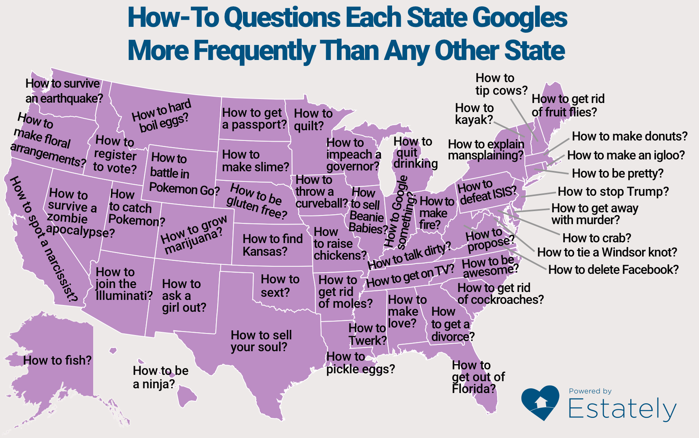

Study addresses the problem of endogeneity ...
- Crime a major social and economic issue in the United States. The direct cost of crime was estimated to be approximately 200 billion USD in 1993 (Miller et all (1993)). Meanwhile, the federal government was estimated to spend 74 billion USD in 1990 on the criminal justice system, with 32 billion USD earmarked for police protection alone (Levitt (1997)).
- Becker (1968) was a seminal contribution in addressing the issues of criminal behaviour and sanctions. However studies following Becker were unable to estimate the effect of police force on crime.
- Studies faced the problem of police hiring being influenced by crime, i.e. increased crime rates could have led to higher police staffing. Levitt's aim in this paper is to break the problem of endogeneity through intrumental variables approach.
... between police hirings and crime in the United States ...

... using mayoral and gubernatorial elections as instruments
- Crime is a political issue - incumbents have an incentive to increase police force just before elections to project “tough on crime” image.
- The IV used should affect the size of police force but should not belong to the crime production function, i.e. any impact of elections on crime must flow through changes in police hiring practices alone.
- Number of sworn officers grows by approximately 2% on average in both gubernatorial and mayoral election but completely flat in non-election years.
NOTE!
Election years show a considerable uptick in police hiring compared to non-election years

Electoral cycles significantly impact police hiring ...
- The author estimates the effect of police on crime using the Two-Stage Least Squares (2SLS), modelling police as a function of election variables in the first step.
- Increase in police during elections does not account for other possible factors that might influence this rise such as the state of the economy, demographic variables, state expenditure on welfare and education and other economic factors.
-
In order to account for those factors, a more formal modelling;
$$\Delta ln P_{it} = \Theta_{1}M_{it} + \Theta_{2}G_{it} + X_{it} \delta + \gamma_{t} + \lambda_{i} + \nu_{it} $$
Electoral cycles significantly impact police hiring ...

... which are subsiquently followed by a reduction in Crime
- The second step of the 2SLS procedure requires regressing the categories of crime on predicted police hiring levels obtained in the earlier steps.
-
The impact of police on crime is modelled as;
$$\Delta ln C_{ijt} = \beta_{1j} \Delta ln P_{ijt} + \beta_{2j} \Delta ln P_{ijt - 1} + X_{it} \eta_{j} + \gamma_{tj} + \lambda_{i} + \varepsilon_{ijt}$$ - The coefficients on police, demographic and state and local spending variables are constrained to be identical for all sub groups of violent and property crimes, but are allowed to vary between the two groups.
- Levitt also allows interaction of IVs with city-size and the region dummies. Due to the bias of overfitting in the 2SLS, the author imploys Limited Information Maximum Likelihood (LIML) estimation.
NOTE! Police hiring is treated as endogenous and all other controls are assumed to be exogenous
The effect of police on violent crimes is much larger ...

... than their effects on property crime

Problems!
-
Problem: Overidentification in the 1st step of the Two-Stage Least Squares method?
Solution: Test for overidentification within acceptable bounds after reducing cities with populations of less than 250,000. -
Problem: Endogenity in welfare and education spending?
Solution: Little evidence of endogeneity when using similar IVs. No change in estimates if treated as endogenous. - Problem: Assumption of equal effect of police on crime categories restrictive?
Solution!

Public Policy Implications
- Cohen(1988) and Miller et al (1993) attempted to estimate the cost of crime and quality of life reductions due to pain and suffering, calculating social cost of violent crimes as approximately $60,000 (1992 dollars).
-
Estimated elasticity of violent crime with respect to sworn officers evaluated at the sample mean translates into a
reduction of between 3.2 to 7.0 reported violent crimes and 1.6 to 12.4 reported property crimes per additional police officer.
$$ \Rightarrow ~ SB = 3.2 * \$ 60,000 + 1.6 * \$1,100 \approx \$ 200,000 $$ - Social Costs of hiring an additional police officer based on the average salary equals approximately $40,000 (Donohue and Siegelman (1994)), and non-salary overhead costs of roughly equal amount. However as Levitt highlights, the true social cost may be understated due to presence of deadweight losses caused by tax distortions and increasing prison costs.
$$ \Rightarrow ~ SC = Salary + Overheads \approx \$ 80,000 $$
We don’t know whether the social benefit of having one additional police officer exceeds its social costs!
Take Aways!
- Levitt (1997), filled in gaps in the literature of crime in the 1990s.
- The study uncovers a hidden link between police force hiring and election years, using the link to address the issues of endogenity.
- However, it is impossible if the reduction in crime studied is due to a deterence effect of police or a geographical re-distribution of crime.
Fun Fact!
The estimates showed statistical significance due to a weighing error. In a subsequent paper, Levitt apologises for the error, and uses a different IV to provide more stable results.
That's all folks!!
Presentation: rahulsambathkumar.github.io/CrimeSecurity/
Github repo: Using Electoral Cycles in Police Hiring to estimate the Effect of Police on Crime